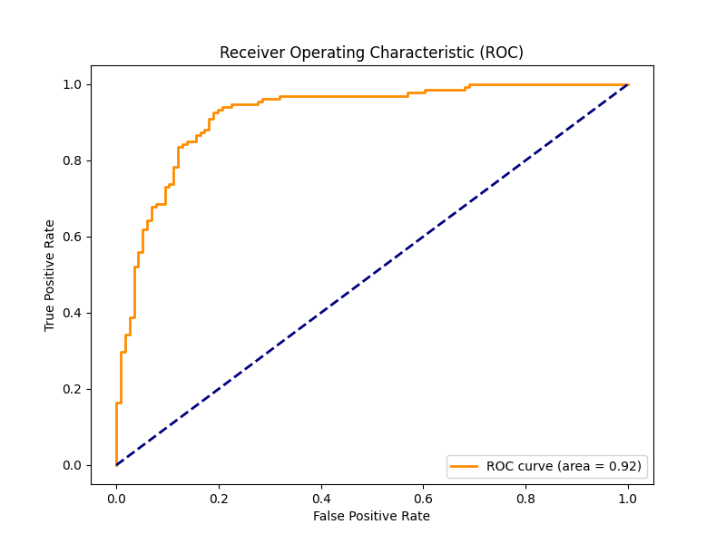
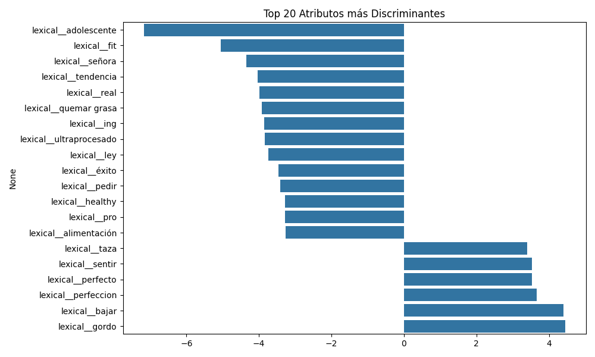

Detección automática de trastornos alimentarios
Fusión tardía de vistas léxica, emocional, estilística y de dominio clínico sobre publicaciones de redes sociales — evaluada bajo el Protocolo de la Fase 2-B.
Contenido
Diseño, pipeline, resultados empíricos del Protocolo y consideraciones para la transición a Fase 3.
Sección 1
Publicaciones textuales en español obtenidas de redes sociales (Twitter / Reddit) según el formato del Protocolo.
Dictamen binario {0, 1} acompañado de una probabilidad calibrada que indica la presencia de señales compatibles con anorexia.
Sección 2
Los pipelines clásicos multi-vista reportan F1 ≈ 0.80–0.84 en eRisk 2018, comparables a transformers a un costo de cómputo significativamente menor.
Aragón et al., 2023 · Villa-Pérez et al., 2023Tomamos como guía la fusión léxica + emocional + estilística + dominio descrita por la literatura del estado del arte hispanohablante.
Aguilera 2021 · Ramírez-Cifuentes 2020Concatenación horizontal de cuatro vistas alimentadas a un FeatureUnion y una LogReg regularizada como decisor final.
Decisión arquitectónica finalEvaluación honesta sobre data_test_fold1.csv; la LogReg sobre vistas fusionadas supera al resto del grid en CV 5-fold (0.9558) y generaliza al conjunto del Protocolo.
Ver sección de ResultadosSección 3
Flujo lineal con bifurcación controlada en la etapa 03 — las cuatro vistas se calculan en paralelo y se reunifican en la 04.
Módulo 3.1 · data_loader.py
Módulo 3.2 · preprocessor.py
Módulo 3.3 · feature_extractor.py · núcleo técnico
Bag-of-words con TF-IDF sobre n-gramas (1–2). Captura vocabulario discriminante específico del dominio.
n × ~15 000 · dispersoDiccionario curado de la literatura (jerga pro-ana, conductas, restricción) — frecuencias por categoría.
n × ~40 · densoLongitud media, ratio de pronombres en 1ª persona, signos, mayúsculas, complejidad léxica.
n × ~30 · densoOcho emociones + dos sentimientos básicos derivados del léxico NRC en español.
n × 10 · densoInspirado en Villa-Pérez et al. (2023) — la diversidad de vistas captura señales complementarias que un único vectorizador léxico pierde.
Módulo 3.4 · feature_union.py
Módulo 3.5 · classifier.py
Módulo 3.6 · evaluator.py
Módulo 3.7 · predictor.py
Sección 4
Modelo de lenguaje en español para tokenización, etiquetado POS y lematización. Carga única al iniciar el pipeline.
Léxico de emociones y sentimientos en formato tabular. Provee las 8 categorías emocionales + valencia y arousal.
Diccionario curado a partir de Ramírez-Cifuentes (2020) y Aguilera (2021). Categorías: jerga pro-ana, restricción, peso, cuerpo.
LIWC con licencia comercial; cuando no está disponible se sustituye por Empath con cobertura comparable de categorías psicolingüísticas.
Sección 5
BoSE + Regresión Logística alcanza F1 = 0.84 en eRisk 2018. La señal emocional es complementaria a la léxica y barata de calcular.
Aragón et al. (2023)Términos como gordo · perfeccion · bajar son predictores explicables que un clínico puede auditar — fundamental para uso real.
Ramírez-Cifuentes 2020 · Aguilera 2021Consenso del estado del arte sobre este conjunto de cuatro algoritmos por su balance entre rendimiento, interpretabilidad y robustez ante desbalance.
Villa-Pérez 2023 · Benítez-Andrades 2022Exigida por el Protocolo, AUC mide ordenamiento de scores y no depende del umbral — apropiada para tareas clínicas donde el coste de FN ≠ FP.
Protocolo eRisk · estándar metodológicoSección 6.1 · Diagnóstico interno · CV sobre el train
Ranking · 5-Fold CV sobre data_train.csv (1500 muestras)
| Modelo | CV AUC | Δ vs ganador |
|---|---|---|
| logreg | 0.9558 | — |
| svm | 0.9546 | −0.0012 |
| xgb | 0.9356 | −0.0202 |
| rf | 0.9310 | −0.0248 |
Los cuatro algoritmos superan 0.93 AUC en validación cruzada — evidencia de que la fusión multi-vista domina sobre la elección de clasificador en esta tarea.
Evaluación honesta · 250 textos de data_test_fold1.csv
Brecha CV ↔ test = −0.034 · overfit suave esperable; el desempeño se mantiene dentro del rango reportado en la literatura (0.80–0.92).
Matriz de confusión · n = 250
Los 12 falsos negativos (8.96% de la clase positiva) fueron exportados a analisis_clinico_falsos_negativos.csv.
Evidencia visual · área bajo la curva

Generada por evaluator.plot_roc() · exportada a output/curva_roc.png
Interpretabilidad · Top-20 atributos discriminantes

gordo · bajar · perfeccion · sentir
perfecto · bulimio · difícil
adolescente · fit · quemar grasa
yo invitar · tendencia · señora
La interpretabilidad es auditada: los términos coinciden con la jerga clínica esperada.
Parte B del entregable · cobertura y eficiencia
| Módulo | Áreas críticas |
|---|---|
| data_loader | esquemas A/B · validación · stratified split |
| preprocessor | perfiles · batch mode · regex de limpieza |
| feature_extractor | cuatro vistas · dims · valores límite |
| feature_union | fusión · escalado selectivo · chi² |
| classifier | grid · CV · selección del ganador |
| evaluator | métricas · gráficos · análisis FN |
| predictor | save/load · pipeline end-to-end |
| Cambio | Beneficio |
|---|---|
| nlp.pipe() | Batch en spaCy · ~3× más rápido vs por-documento |
| tree_method="hist" | XGBoost histogram-based · entrenamiento acelerado |
| FeatureUnion | Cuatro vistas en paralelo · sparse + dense híbrido |
| SelectKBest(chi²) | Reducción de dimensión TF-IDF antes del clasificador |
| Matriz dispersa | Vista A en CSR · ahorro de memoria significativo |
| joblib serialize | Pipeline completo en un .pkl reutilizable |
Sección 8 · Cierre
Cada módulo es una unidad natural de pruebas. Las vistas A–D ofrecen múltiples puntos de optimización: paralelización, cacheo, matrices dispersas y selección con chi² ya están aprovechadas.
El predictor serializado en modelo_anorexia_v1.pkl se puede desplegar como microservicio sin tocar el resto del código.
El módulo 3.5 puede sustituirse por un transformer fine-tuneado (BERT-base, receta UNSL; o MentalBERT) sin alterar el resto del pipeline.
La comparabilidad directa en AUC contra la baseline actual queda garantizada por el mismo evaluator y el mismo conjunto de prueba oficial.
Thompson & Errecalde 2024 · Grigore & Pintilie 2023
Gracias · Equipo 8
Detección Digital de Anorexia · Fase 2-B · 2026